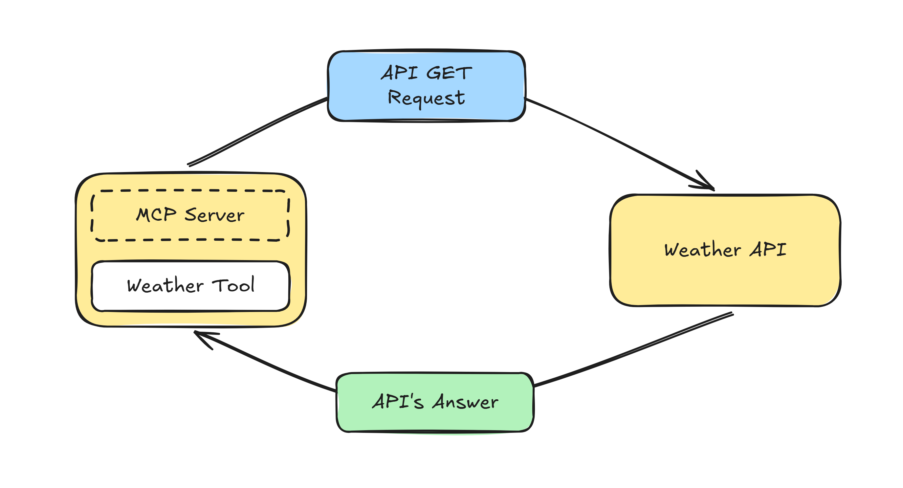
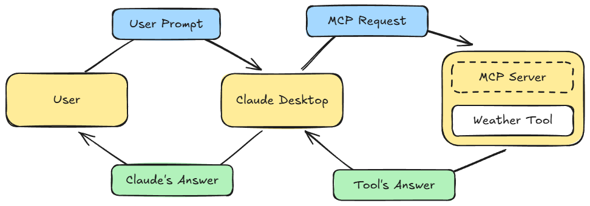
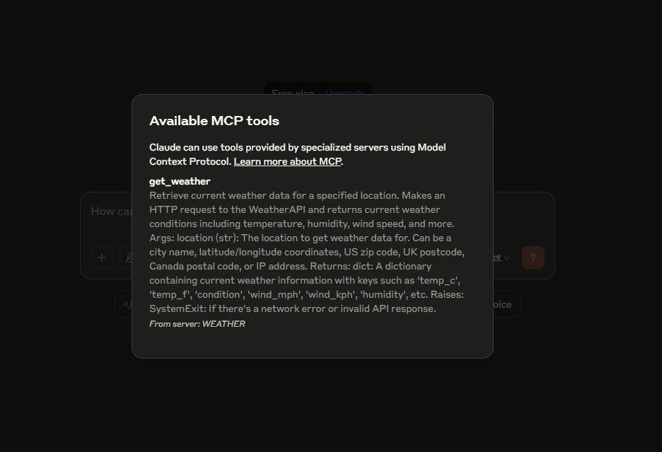
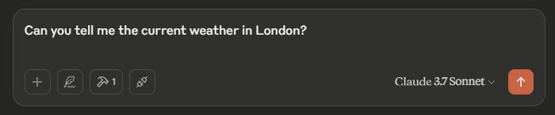
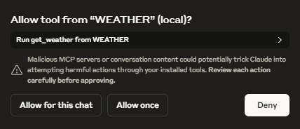
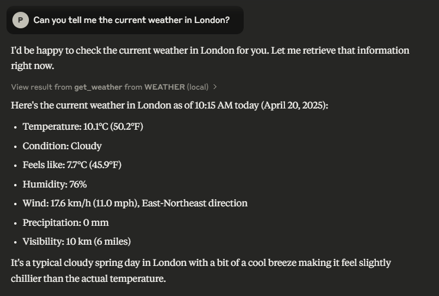

This short project was developed to deepen the understanding of how the Model Context Protocol (MCP) works, focusing specifically on the concept of MCP servers. The project consists of creating a local MCP server in Python using the mcp[cli] library.
The server implements a single tool that makes an HTTP request to a weather API, providing real-time weather context to an AI assistant (in this case, Claude). The code can be found in this repository.
The Model Context Protocol (MCP) is an open standard developed by Anthropic to standardize the integration of AI models with external tools and services. MCP allows AI assistants to interact with various resources without requiring bespoke connectors. It operates on a modular client-server architecture, where AI applications (hosts) communicate with MCP servers that expose resources, tools, and prompts.
This design facilitates seamless context exchange, enabling AI models to perform tasks such as reading files, querying databases, or invoking APIs in an efficient and secure manner.
Claude Desktop leverages MCP to enhance its capabilities by connecting with both local and remote services. Through MCP, Claude can perform actions such as reading from the file system, writing new files, moving files, and searching documents (with user consent).
MCP ensures that interactions with external tools are permissioned, transparent, and controlled by the user, preserving a high standard of privacy and security. This integration empowers users to extend Claude's functionality, making it a versatile and powerful assistant for a wide range of tasks.
To fetch current weather data, the tool integrates with a Weather API, which provides real-time weather information for any location worldwide. The API returns data such as temperature, humidity, wind speed, and weather conditions in JSON format.
Developers access this data by making HTTP requests to the API endpoints, specifying parameters such as the city name or geographic coordinates.
The Current Weather Tool is a simple MCP server that interfaces with the Weather API to provide up-to-date weather information. When connected to an MCP-compatible host like Claude Desktop, users can query the tool using natural language prompts (e.g., "What's the weather in London?").
When a query is made, Claude Desktop sends an MCP request to the Current Weather Tool, which then retrieves the relevant data from the external Weather API. The tool processes the received data, formats it into a concise weather report, and sends the response back to the host. The AI assistant then presents the information to the user in a natural and helpful way.
The Weather Tool only processes user-specified queries (such as city names or geographic coordinates) and does not store or transmit any personal information, ensuring user privacy is maintained throughout the interaction.
After setting up the MCP server and configuring Claude Desktop, the Current Weather Tool becomes available for use:
When a user prompts Claude with a weather-related question, the assistant automatically identifies the need to use the external tool:
Before any external access is performed, Claude asks for the user's explicit permission:
Once permission is granted, the tool retrieves the latest weather data and Claude presents a clear, concise answer to the user:
